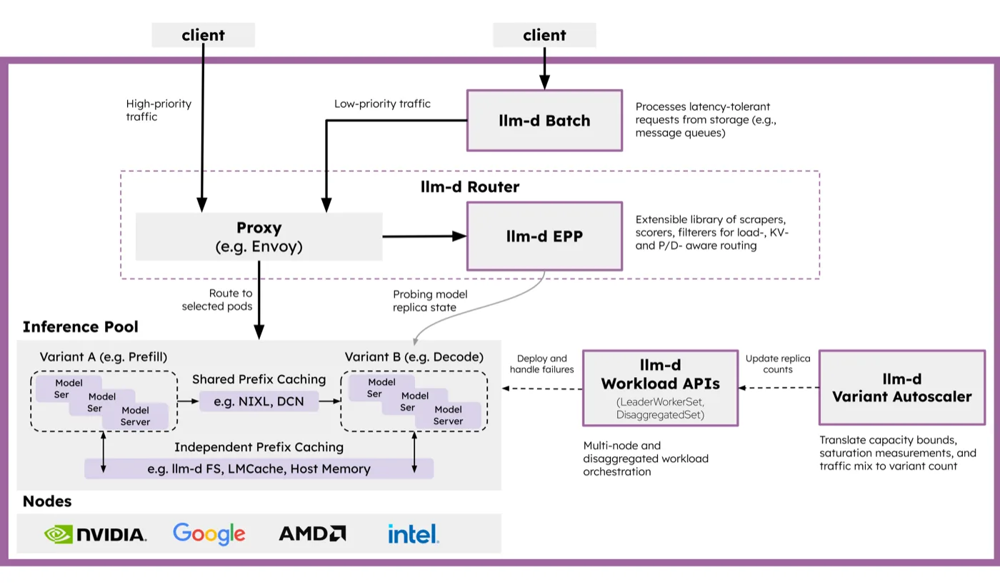

llm
라우팅 판단을 프록시 밖으로 - llm-d의 CR 구조와 Envoy ext_proc
llm-d가 어느 vLLM 파드로 요청을 보낼지 정하는 경로를 Envoy 필터 체인과 ext_proc 설정, 그리고 llm-d가 쓰는 CRD 사이의 의존성까지 따라간 기록
2026.09.20 · 34 min read
1부. 추론 라우팅이 별도 컴포넌트를 부르는 이유
1.1 추론 요청이 일반 HTTP 요청과 다른 지점
일반적인 웹 요청은 헤더만 보고 어디로 보낼지 정할 수 있습니다. 추론 요청은 그렇지 않습니다.
- 판단 근거가 본문에 있습니다
- 어느 모델을 쓸지, 프롬프트가 얼마나 긴지, 앞부분이 이미 어느 파드에 캐시돼 있는지는 전부 JSON 본문 안에 있습니다. 헤더만 읽고 넘기는 경로로는 이 정보를 보지 못합니다.
- 처리 시간이 요청마다 수십 배 차이 납니다
- 토큰 20개를 생성하는 요청과 2,000개를 생성하는 요청이 같은 엔드포인트로 들어옵니다. 라운드 로빈은 이미 대기열이 긴 파드에 또 하나를 얹습니다.
- 응답이 스트림입니다
- SSE로 토큰이 흘러나오는 동안 커넥션이 유지됩니다. 커넥션 단위로 분산하는 L4 로드밸런서는 첫 배정 이후 아무 조정도 하지 못합니다.
앞선 글에서 Kubernetes Service 직결과 load-only 라우터, prefix-aware 라우터에 같은 워크로드를 흘려 prefix cache hit rate가 33%·30%·65%로 갈리는 것을 실측했습니다. 그 65%를 만든 배선은 설정 파일 몇 줄과 CR 몇 개로 되어 있습니다.
1.2 llm-d의 두 조각 - Proxy와 EPP

Proxy (e.g. Envoy)에 e.g.가 붙은 것은 llm-d가 특정 프록시에 묶여 있지 않기 때문이고, 판단 로직이 llm-d EPP라는 별도 박스로 빠진 것은 그 로직이 프록시 바이너리 안으로 들어가지 않기 때문입니다.
EPP는 Endpoint Picker의 약자입니다. 요청마다 "이 요청은 어느 파드로" 한 줄을 답하는 gRPC 서버입니다.
2부. Envoy - 요청 경로 한가운데의 프록시
2.1 리스너에서 엔드포인트까지 - 다섯 층
Envoy 설정은 다섯 개 개념으로 이루어집니다.
static_resources:
listeners:
- name: httpbin-demo
address:
socket_address: { address: 0.0.0.0, port_value: 15001 } # 1 Listener
filter_chains:
- filters:
- name: envoy.filters.network.http_connection_manager # 2 네트워크 필터
typed_config:
http_filters:
- name: envoy.filters.http.router # 3 HTTP 필터(터미널)
route_config:
virtual_hosts:
- domains: ["*"]
routes:
- match: { prefix: "/" }
route: { cluster: httpbin_service } # 4 Route to Cluster
clusters:
- name: httpbin_service
lb_policy: ROUND_ROBIN
load_assignment:
endpoints:
- lb_endpoints:
- endpoint:
address:
socket_address: { address: httpbin, port_value: 8000 } # 5 Endpoint
- Listener - 포트를 엽니다. 들어온 커넥션이 어떤 필터 체인을 탈지도 여기서 정합니다.
- Network filter - 바이트 스트림을 프로토콜로 해석합니다. Envoy는 본질적으로 L3/L4 바이트 처리 엔진이고, MongoDB·Redis·Kafka용 필터가 같은 자리에 붙습니다. HTTP를 맡는 것이 HTTP Connection Manager(HCM)입니다.
- HTTP filter - HCM 안에 또 하나의 필터 체인이 있습니다. CORS·RBAC·속도 제한이 여기 붙고, 체인은 반드시
router터미널 필터로 끝나야 합니다. - Route - 경로·헤더·도메인을 보고 어느 cluster로 보낼지 정합니다.
- Cluster - 업스트림 서비스 하나를 가리키는 논리 단위입니다. 그 안에 실제 IP인 endpoint들이 들어 있습니다.
마지막 두 줄의 중첩을 보면 clusters[].load_assignment.endpoints[].lb_endpoints[].endpoint.address, endpoint가 cluster 안에 담겨 있습니다. cluster를 고르는 일과 그 안에서 IP 하나를 고르는 일은 별개입니다.
2.2 요청이 라우팅되는 순간
Envoy 공식 문서의 Life of a Request가 12단계로 적어둔 경로를 줄이면 이렇습니다.
flowchart LR
A["다운스트림 커넥션"] --> B["Listener - accept"]
B --> C["네트워크 필터 체인<br/>HCM이 마지막"]
C --> D["HTTP 필터 체인<br/>스트림마다 하나씩"]
D --> E["router 필터<br/>route 매칭 + cluster 선택"]
E --> F["cluster의 LB<br/>endpoint 선정"]
F --> G["업스트림"]
- cluster를 고르는 것은
router필터입니다. HTTP 필터 체인 맨 끝의 터미널 필터이고, 이 필터가 헤더를 디코드하는 시점에 route 매칭과 cluster 선택이 함께 일어납니다. - endpoint를 고르는 것은 그 다음 단계입니다. cluster가 정해진 뒤
lb_policy가 실제 IP 하나를 뽑고, 이때 circuit breaker를 검사합니다. - 응답은 정확히 역순으로 내려옵니다. 요청에서 마지막이던 필터가 응답에서는 처음입니다.
router가 체인의 마지막이라는 말은, 그 앞에 필터를 하나 끼우면 cluster가 정해지기 전에 요청을 만질 수 있다는 뜻입니다.
2.3 xDS - 재시작 없이 바뀌는 설정
위 YAML은 static_resources입니다. 파드가 뜨고 지는 환경에서 엔드포인트 목록을 파일에 박아둘 수는 없습니다. Envoy는 이 부분을 API로 받습니다.
| API | 무엇을 받는가 | 관계 |
|---|---|---|
| LDS | Listener | — |
| RDS | Route | LDS의 부분집합 |
| CDS | Cluster | — |
| EDS | Endpoint | CDS의 부분집합 |
| SDS | 인증서 | — |
| ADS | 위 전부를 하나의 스트림으로 | 순서 보장 |
부트스트랩 설정 하나만 정적으로 두고 나머지를 전부 동적으로 받을 수 있습니다. 설정이 바뀌어도 프로세스를 재시작하지 않으므로, 스케일 인·아웃이 잦은 추론 파드 집합에 맞습니다.
ADS가 따로 있는 것은 순서 때문입니다. RDS로 "클러스터 foo로 가는 새 루트"가 먼저 도착하고 foo를 담은 CDS 업데이트가 아직 안 왔으면, 그 사이 요청은 라우팅 오류가 납니다. ADS는 모든 변경을 직렬화된 한 스트림으로 흘려 이 경쟁 상태를 없앱니다.
EDS가 CDS의 부분집합이라는 점도 여기서 쓰입니다. 파드가 하나 늘었을 때 cluster 정의 전체를 다시 밀 필요 없이 엔드포인트 목록만 갱신됩니다.
2.4 해시 입력에 본문이 없다
Envoy에도 "같은 키는 같은 백엔드로" 보내는 기능이 이미 있습니다. RING_HASH와 MAGLEV입니다. 호스트 하나가 빠졌을 때 재배치되는 요청은 ring hash에서 대략 1/N이고, maglev는 테이블 조회와 호스트 선택이 각각 10배·5배 빠른 대신 호스트 제거 시 이동하는 키가 ring hash의 두 배쯤 됩니다.
해시할 수 있는 입력은 정해져 있습니다. RouteAction.HashPolicy가 받는 것은 다섯 가지입니다.
| 입력 | 필드 |
|---|---|
| 요청 헤더 | header.header_name |
| 쿠키 | cookie.name |
| 커넥션 속성 | connection_properties.source_ip |
| 쿼리 파라미터 | query_parameter.name |
| 필터 상태 | filter_state.key |
요청 본문이 목록에 없습니다. 프롬프트 앞부분이 어느 파드에 캐시돼 있는지로 라우팅하려면 본문을 읽어야 하는데, Envoy의 consistent hashing은 본문을 해시 입력으로 받지 않습니다. 추론 라우팅에 별도 컴포넌트가 붙는 것은 이 제약 때문입니다.
3부. ext_proc - 판단을 프로세스 밖으로
3.1 재컴파일 없이 확장하는 세 가지
끼울 자리가 있어도 필터를 만드는 비용은 따로 듭니다. Envoy는 C++로 쓰였고, 필터를 추가하려면 원칙적으로 Envoy를 다시 빌드해야 합니다. Istio가 그렇게 하고, 그 대가로 커스텀 빌드를 유지보수합니다.
바이너리를 다시 만들지 않고 확장하는 방법은 세 가지입니다.
- Lua - 스크립트를 필터로 실행합니다. 가볍지만 스크립트 안에서 할 수 있는 일이 제한됩니다.
- Wasm - WebAssembly 모듈을 얹습니다. 언어 선택이 넓어지지만 빌드 체계가 따라붙습니다.
- External processing - 처리를 Envoy 프로세스 밖의 gRPC 서버에 위임합니다. 서버를 어떤 언어로 쓰든 상관없고, 배포와 스케일도 따로 갑니다.
llm-d의 스케줄링 로직은 KV 캐시 인덱스를 들고 있어야 하고 모델 서버 메트릭을 주기적으로 긁어야 합니다. 프록시 안에 두기에는 무거워서 세 번째를 씁니다.
3.2 외부에 물어보는 패턴은 이미 있었다
필터가 외부 서비스를 호출해 요청을 계속할지 결정하는 구조는 Envoy에 이미 있습니다. 글로벌 속도 제한이 그렇습니다.
요청 -> 속도 제한 필터가 디스크립터(헤더·주소 등)를 뽑음
-> 외부 속도 제한 서버(RLS)에 gRPC로 전송
-> RLS가 Redis 카운터를 보고 판정
-> 초과면 429 Too Many Requests + x-envoy-ratelimited: true
복제본이 몇 개든 같은 서버를 보기 때문에 전역 한도가 성립합니다. ext_proc도 같은 구조인데, 보내는 것이 디스크립터가 아니라 요청 전체이고 받는 것이 허용 여부가 아니라 목적지입니다.
3.3 llm-d의 ext_proc 설정
공식 문서는 ext_proc를 "외부 프로세서라 불리는 외부 서비스를 필터 체인에 연결한다"고 설명합니다. 인터페이스는 양방향 스트림 RPC 하나뿐입니다.
service ExternalProcessor {
rpc Process(stream ProcessingRequest) returns (stream ProcessingResponse) {}
}
llm-d가 Kubernetes 없이 도는 예제에 실린 설정이 이렇습니다.
http_filters:
- name: envoy.filters.http.ext_proc
typed_config:
"@type": type.googleapis.com/envoy.extensions.filters.http.ext_proc.v3.ExternalProcessor
grpc_service:
envoy_grpc:
cluster_name: ext_proc
authority: localhost:9002
timeout: 10s
processing_mode:
request_header_mode: SEND
response_header_mode: SEND
request_body_mode: FULL_DUPLEX_STREAMED
response_body_mode: FULL_DUPLEX_STREAMED
message_timeout: 1000s
request_header_mode: SEND- 요청 헤더를 EPP로 넘깁니다.router보다 앞이라 아직 cluster가 정해지지 않았습니다. 이 값은 기본값이기도 합니다.request_body_mode: FULL_DUPLEX_STREAMED- 기본값은NONE, 즉 본문을 아예 안 보냅니다. 추론 라우팅에서는 반드시 바꿔야 하는 값입니다.BUFFERED로 두면 본문을 다 모은 뒤 넘기므로 스트리밍 응답의 첫 토큰이 마지막 토큰을 기다립니다.message_timeout: 1000s- 기본값은 200ms입니다. 다만 공식 문서는 body send mode가FULL_DUPLEX_STREAMED일 때 이 타임아웃이 적용되지 않는다고 적고 있어서, 위 설정에서 1000s는 실질적으로 무해한 값에 가깝습니다.
기본 동작은 응답을 받을 때까지 필터 체인을 멈추는 것입니다. 멈추지 않는 모드(observability_mode)가 따로 있습니다. ext_proc의 지연은 대부분 이 대기에서 옵니다.
3.4 목적지를 헤더로 받는 클러스터
EPP가 고른 파드를 Envoy에게 알리는 방법은 새 cluster를 만드는 것이 아닙니다. 헤더 한 줄입니다.
- name: original_destination_cluster
type: ORIGINAL_DST
lb_policy: CLUSTER_PROVIDED
original_dst_lb_config:
use_http_header: true
http_header_name: x-gateway-destination-endpoint
ORIGINAL_DST는 고정된 엔드포인트 목록이 없는 클러스터 타입입니다. use_http_header: true를 켜면 지정한 헤더 값을 그대로 목적지로 씁니다. lb_policy: CLUSTER_PROVIDED는 로드밸런싱을 Envoy가 하지 않는다는 뜻이라, 라운드 로빈도 least request도 여기서는 돌지 않습니다.
Endpoint Picker 프로토콜 규격은 EPP가 두 군데에 같은 값을 쓰도록 요구합니다.
- HTTP 헤더
x-gateway-destination-endpoint - ext_proc 응답의
dynamic_metadata, 네임스페이스envoy.lb
dynamicMetadata: {
"envoy.lb": {
"x-gateway-destination-endpoint": "10.244.0.42:8000"
}
}
envoy.lb인 이유는 Envoy의 subset 로드밸런싱이 호스트 메타데이터를 그 네임스페이스에서 읽기 때문입니다. 값은 콤마로 구분한 여러 개일 수 있고, 재시도가 설정돼 있으면 순서대로 내려갑니다. 헤더와 메타데이터에 서로 다른 값을 넣는 것은 규격이 금지합니다.
sequenceDiagram
participant C as Client
participant E as Envoy
participant P as EPP - gRPC 9002
participant V as vLLM Pod
C->>E: POST /v1/chat/completions
E->>P: ProcessingRequest - request_headers
E->>P: ProcessingRequest - request_body
Note over P: queue / kv-cache / prefix 점수 계산
P-->>E: header_mutation + dynamic_metadata
E->>V: ORIGINAL_DST로 10.244.0.42:8000에 직접 연결
V-->>C: SSE 토큰 스트림
적격 엔드포인트가 없으면 EPP는 ImmediateResponse로 503을, 과부하라 요청을 버려야 하면 429를 돌려줍니다. 둘 다 규격에 정해진 값입니다.
EPP가 붙는 자리는 별도 cluster로 선언합니다.
- name: ext_proc
type: STATIC
lb_policy: LEAST_REQUEST
health_checks:
- grpc_health_check:
service_name: "envoy.service.ext_proc.v3.ExternalProcessor"
load_assignment:
endpoints: [{ address: 127.0.0.1, port_value: 9002 }]
127.0.0.1:9002입니다. EPP를 Envoy와 같은 호스트에 붙여 왕복을 루프백으로 줄입니다. Kubernetes 배포에서는 한 걸음 더 나가 Unix Domain Socket(unix:///etc/ai-gateway-extproc-uds/run.sock)을 씁니다.
4부. llm-d를 이루는 CR들
4.1 llm-d가 직접 정의하는 CRD는 둘뿐
llm-d 조직의 저장소를 훑어 kind: CustomResourceDefinition 파일을 세면, 활성 저장소에서 llm-d가 자기 그룹으로 정의하는 CRD는 두 개입니다. 둘 다 llm-d-router에 있습니다.
| apiVersion | kind | spec 필드 | 하는 일 |
|---|---|---|---|
llm-d.ai/v1alpha2 |
InferenceObjective |
poolRef, priority |
풀 안에서 워크로드 우선순위를 정합니다. 자원이 모자랄 때 누구를 먼저 처리할지 |
llm-d.ai/v1alpha2 |
InferenceModelRewrite |
poolRef, rules |
요청 본문의 model 값을 가중치에 따라 다른 이름으로 바꿉니다. A/B와 카나리 |
apiVersion: llm-d.ai/v1alpha2
kind: InferenceObjective
metadata:
name: premium-traffic
spec:
priority: 100
poolRef:
name: flow-control
priority는 높을수록 우선이고 음수도 됩니다. 같은 가이드가 standard-traffic에 0, best-effort-traffic에 -10을 줍니다.
둘 다 라우팅 정책용이고, 워크로드를 만드는 CRD는 llm-d에 없습니다. vLLM 파드를 띄우는 것은 CR이 아니라 Helm 차트와 kustomize입니다. 그 자리에 있던 ModelService(llm-d.ai/v1alpha1)는 저장소가 보관 처리되면서 은퇴했고, 후속은 CRD가 아니라 llm-d-modelservice Helm 차트입니다.
4.2 llm-d가 빌려 쓰는 CRD
나머지는 이미 있는 표준 API를 씁니다.
| apiVersion | kind | 주인 | llm-d에서의 역할 |
|---|---|---|---|
gateway.networking.k8s.io/v1 |
Gateway |
Gateway API | 외부 진입점 |
gateway.networking.k8s.io/v1 |
HTTPRoute |
Gateway API | Gateway와 InferencePool을 잇습니다 |
inference.networking.k8s.io/v1 |
InferencePool |
Gateway API Inference Extension | 파드 집합 + EPP 지정 |
leaderworkerset.x-k8s.io/v1 |
LeaderWorkerSet |
kubernetes-sigs/lws | 여러 노드에 걸친 모델 하나 |
disaggregatedset.x-k8s.io/v1 |
DisaggregatedSet |
kubernetes-sigs/lws | 역할별 배치. llm-d가 설치 스크립트로 lws v0.10.0을 박아 가져옵니다 |
keda.sh/v1alpha1 |
ScaledObject |
KEDA | 오토스케일링 대상 |
monitoring.coreos.com/v1 |
ServiceMonitor |
Prometheus Operator | EPP·모델 서버 메트릭 수집 |
InferencePool의 spec은 필드 세 개입니다.
apiVersion: inference.networking.k8s.io/v1
kind: InferencePool
metadata:
name: llama32-1b
spec:
selector:
matchLabels:
app: llama32-1b
targetPorts:
- number: 8000
endpointPickerRef:
name: llama32-1b-epp
port:
number: 9002
failureMode: FailClose
selector- 같은 네임스페이스의 파드만 고릅니다. 라벨이 정확히 일치해야 하고, 최대 64개까지입니다.targetPorts- 최대 8개.podIP:portNumber각각이 별개 엔드포인트로 취급됩니다.endpointPickerRef- EPP를 가리킵니다.kind기본값은Service이고ExternalNameService는 금지돼 있습니다.
failureMode는 값이 어디서 오느냐에 따라 달라집니다. API 기본값은 FailClose인데 llm-d 차트의 기본값은 FailOpen입니다. 규격 문서만 보고 EPP가 죽으면 요청이 막힌다고 단정하면 실제 배포와 어긋나므로, 적용된 리소스에서 값을 직접 확인해야 합니다.
이름만 보면 llm-d 것으로 오해하기 쉬운 리소스도 있습니다.
LLMInferenceService는 llm-d 것이 아닙니다. KServe의 CRD(serving.kserve.io, 약칭llmisvc)입니다. llm-d 저장소에는 이 정의가 하나도 없습니다.VariantAutoscalingCRD는 제거됐습니다. "VariantAutoscaling CRD를 없앤다"는 제안서가 Implemented 상태입니다. 지금은 KEDAScaledObject나 HPA에 붙은 애노테이션으로 대상을 찾고wva_desired_replicas메트릭을 내보냅니다. 참고로 이 은퇴한 CRD의 그룹만 하이픈 없는llmd.ai였습니다.InferencePoolImport는 llm-d가 쓰지 않습니다. 멀티클러스터용으로 규격에는 있지만 llm-d의 CRD 설치 스크립트가 적용하는 매니페스트에는 들어 있지 않습니다.
4.3 EndpointPickerConfig는 CRD가 아니다
EPP 설정은 CRD처럼 생겼습니다.
apiVersion: llm-d.ai/v1alpha1
kind: EndpointPickerConfig
plugins:
- type: prefix-cache-affinity-filter
- type: token-load-scorer
schedulingProfiles:
- name: default
plugins:
- pluginRef: prefix-cache-affinity-filter
- pluginRef: token-load-scorer
apiVersion과 kind가 있으니 kubectl apply로 넣는 리소스처럼 보이지만, CRD 정의 파일이 존재하지 않습니다. kubectl get endpointpickerconfigs는 실패합니다.
근거는 이렇습니다.
- 저장소 어디에도 이 kind의 CRD YAML이 없습니다. 같은 저장소의
InferenceObjective는 CRD YAML과 clientset·informer·lister를 전부 갖고 있는데, 이쪽은 타입 정의와 deepcopy뿐입니다. - Go 타입이
metav1.TypeMeta만 품고metav1.ObjectMeta가 없습니다. 이름도 네임스페이스도 없으니 API 서버가 저장할 수 없습니다. - EPP 바이너리가
--config-file로 읽고, 그 파일은 ConfigMap으로 마운트됩니다. Helm 차트의pluginsCustomConfig값이 그 ConfigMap 내용이 됩니다.
Kubernetes의 YAML 형식만 빌려 쓰고 API 서버에는 등록하지 않는 구조입니다. 그룹 이름을 정한 커밋도 이것을 pseudo CRD라고 적고 있습니다.
4.4 CR 사이의 의존성
참조가 어느 필드로 걸리는지까지 넣으면 이렇습니다.
flowchart TD
GW["Gateway<br/>gateway.networking.k8s.io/v1"]
HR["HTTPRoute"]
IP["InferencePool<br/>inference.networking.k8s.io/v1"]
IO["InferenceObjective / InferenceModelRewrite<br/>llm-d.ai/v1alpha2"]
SVC["Service - EPP"]
EPPD["EPP Deployment"]
CM["ConfigMap<br/>EndpointPickerConfig"]
PODS["모델 서버 파드<br/>Deployment 또는 LeaderWorkerSet"]
HR -->|"parentRefs"| GW
HR -->|"backendRefs.kind = InferencePool"| IP
IP -->|"endpointPickerRef.name"| SVC
IP -->|"selector.matchLabels"| PODS
SVC --> EPPD
EPPD -->|"--config-file 마운트"| CM
IO -->|"poolRef.name"| IP
화살표가 가리키는 쪽이 먼저 있어야 합니다.
HTTPRoute.spec.rules[].backendRefs[].kind: InferencePool- 이 한 줄이 "일반 로드밸런싱 말고 EPP에게 물어봐라"로 해석됩니다. Service를 가리키면 평범한 kube-proxy 분산으로 돌아갑니다.InferencePool.spec.selector- 라벨이 모델 서버 파드와 정확히 일치해야 합니다.InferenceObjective.spec.poolRef-group기본값이inference.networking.k8s.io,kind기본값이InferencePool이라 실제로는name한 줄만 씁니다.
EPP는 CR이 만들어주는 것이 아니라 평범한 Deployment와 Service입니다. InferencePool은 그것을 이름으로 가리키기만 하므로, EPP를 갈아끼울 때 풀 정의는 건드리지 않아도 됩니다.
watch하는 주체는 둘입니다. Gateway 구현체 컨트롤러가 HTTPRoute와 InferencePool을 보고 프록시에 ext_proc 필터를 설정하고, EPP가 InferenceObjective와 InferenceModelRewrite를 보고 우선순위와 리라이트 규칙을 적용합니다. Deployment를 만드는 llm-d 컨트롤러는 없습니다.
4.5 EPP가 점수를 매기는 방식
스케줄링 프로파일은 네 종류의 플러그인으로 조립됩니다.
- filter - 후보에서 빼는 단계입니다.
decode-filter,prefill-filter,utilization-filter같은 것들입니다. - scorer - 남은 후보에 점수를 매깁니다. 현재 구현에 21개가 등록돼 있습니다.
- picker - 점수를 받아 하나를 고릅니다.
max-score-picker,random-picker,weighted-random-picker. - profile handler - 프로파일이 여럿일 때 어느 것을 돌릴지 정합니다. P/D 분리에는
disagg-profile-handler를 씁니다.
실습에서 쓴 프로파일은 스코어러 셋뿐이었습니다.
plugins:
- type: queue-scorer
- type: kv-cache-utilization-scorer
- type: prefix-cache-scorer
queue-scorer- 각 파드의 대기 요청 수.kv-cache-utilization-scorer- KV 캐시 점유율. 꽉 찬 파드는 새 요청을 받으면 기존 시퀀스를 선점 축출하게 됩니다.prefix-cache-scorer- 프롬프트 앞부분이 이미 어느 파드에 올라가 있는지.
pluginRef에 weight를 붙여 가중치를 줄 수 있습니다. 그래서 대기열이 가장 짧은 파드가 항상 뽑히지는 않습니다. 대기열이 한 칸 길어도 프리픽스가 캐시된 파드가 선택되는 경우가 있고, 프리필을 건너뛰는 이득이 더 크면 그쪽이 맞습니다.
점수의 원천은 모델 서버가 노출하는 Prometheus 메트릭입니다. 규격이 요구하는 것이 셋, 프리픽스 스코어러가 쓰는 선택 항목이 둘입니다.
| 규격상 이름 | vLLM 메트릭 | 쓰는 곳 |
|---|---|---|
| TotalQueuedRequests | vllm:num_requests_waiting |
queue-scorer |
| TotalRunningRequests | vllm:num_requests_running |
queue-scorer |
| KVCacheUtilization | vllm:kv_cache_usage_perc |
kv-cache-utilization-scorer |
| BlockSize (선택) | vllm:cache_config_info{block_size} |
prefix-cache-scorer |
| NumGPUBlocks (선택) | vllm:cache_config_info{num_gpu_blocks} |
prefix-cache-scorer |
모델 서버가 이 메트릭을 내보내지 않으면 스코어러는 점수를 매기지 못합니다. 그래도 라우팅은 계속 돌기 때문에 겉으로는 정상으로 보입니다. 실습에서 llama.cpp를 모델 서버로 썼을 때가 그랬습니다. EPP가 메트릭을 긁으러 갈 때마다 501이 돌아왔고, 요청은 정상 처리되지만 스코어링 신호는 비어 있었습니다.
5부. 적용부터 라우팅까지
5.1 설치 순서
1. CRD 등록
Gateway API standard-install.yaml
GAIE v1-manifests.yaml (InferencePool)
llm-d-router manifests.yaml (InferenceObjective, InferenceModelRewrite)
2. Gateway 생성 (Gateway Mode만)
3. helm install llm-d-router-* InferencePool + EPP ConfigMap/Deployment/Service/RBAC
4. kubectl apply -k modelserver/ vLLM Deployment 또는 LeaderWorkerSet
5. InferenceObjective 적용 (차트 값으로 만들거나 따로)
3번과 4번 사이는 라벨로 이어집니다. 차트가 만든 InferencePool.spec.selector와 모델 서버 파드의 라벨이 같아야 EPP가 그 파드를 발견합니다.
ServiceMonitor를 쓸 거라면 Prometheus Operator CRD가 먼저 있어야 하므로, 모니터링 스택을 라우터보다 먼저 설치합니다.
5.2 Standalone Mode와 Gateway Mode
차트가 둘로 갈리는 기준은 프록시를 누가 소유하느냐입니다.
| Standalone Mode | Gateway Mode | |
|---|---|---|
| 차트 | llm-d-router-standalone |
llm-d-router-gateway |
| 프록시 | 차트가 직접 띄웁니다 (Envoy 기본) | 기존 Kubernetes Gateway가 맡습니다 |
Gateway |
필요 없음 | 필요 |
HTTPRoute |
만들지 않음 | 만듭니다 |
| 진입점 | <release>-epp Service |
Gateway 주소 |
Standalone은 Gateway API 구현체 없이 llm-d만 세워볼 때 쓰고, Gateway Mode는 이미 Istio나 kgateway 같은 게이트웨이가 있는 클러스터에 얹을 때 씁니다. 두 차트 모두 routerlib 라이브러리 차트를 공유해서, 만드는 InferencePool과 EPP는 같습니다.
5.3 P/D 분리는 CRD가 아니라 라벨
prefill과 decode를 나누는 전용 리소스는 없습니다. 공식 문서도 전용 리소스가 아니라 파드 라벨로 표현한다고 적고 있습니다.
apiVersion: apps/v1
kind: Deployment
metadata:
name: decode
labels:
llm-d.ai/role: decode
llm-d.ai/role=prefill과 llm-d.ai/role=decode를 단 Deployment 둘이 같은 InferencePool 안에 들어갑니다. EPP는 그 라벨을 보고 어느 쪽이 prefill이고 어느 쪽이 decode인지 압니다.
flowchart LR
A["요청"] --> B["프록시"]
B -->|ext_proc| C["EPP<br/>라벨로 P/D 판별"]
C --> D["라우팅 사이드카"]
D --> E["prefill 파드<br/>프롬프트 처리"]
E -->|"KV 블록 위치 메타데이터"| D
D --> F["decode 파드"]
F -->|"NIXL로 RDMA pull"| E
F --> G["토큰 생성"]
decode 파드가 prefill이 만든 KV를 RDMA로 끌어옵니다. 이 전송을 맡는 것이 NIXL이고, 각 파드에 붙는 라우팅 사이드카가 경로를 중계합니다.
5.4 모델 여러 개 - base model마다 풀 하나
LoRA 어댑터처럼 같은 base model 위에 올라가는 모델이 여럿이면, 요청 본문의 model 값과 실제 파드 집합이 1:1로 맞지 않습니다. 그 차이를 헤더로 메웁니다.
본문 {"model": "food-review-1"}
-> 프록시가 ext_proc 호출
-> base model이 Qwen/Qwen3-32B 임을 확인
-> 헤더 X-Gateway-Base-Model-Name: Qwen/Qwen3-32B 설정
-> HTTPRoute가 그 헤더로 매치해 qwen-pool 로 라우팅
-> EPP가 엔드포인트 선택 (원래 모델 이름은 그대로 둠)
-> 모델 서버가 food-review-1 LoRA 어댑터를 로드
base model 하나에 InferencePool 하나와 HTTPRoute 하나가 대응합니다. HTTPRoute가 X-Gateway-Base-Model-Name을 Exact로 매치하는 것도 그래서입니다. 실습에서 헤더를 바꿔 넣었을 때 응답의 모델명이 갈린 것도 같은 구조였습니다.
x-ai-eg-model: llama-3.2-1b -> "model": "bartowski/Llama-3.2-1B-Instruct-GGUF"
x-ai-eg-model: qwen2.5-0.5b -> "model": "Qwen/Qwen2.5-0.5B-Instruct-GGUF"
6부. 대가와 이름
6.1 요청마다 늘어나는 홉
- 홉이 하나 늘어납니다. 헤더와 본문 단계에서 gRPC 왕복이 일어나고, 그동안 필터 체인은 멈춥니다. EPP를 루프백이나 UDS로 붙이는 것은 이 왕복을 줄이기 위해서입니다.
- 버퍼 한도를 올려야 합니다. Envoy Gateway의 기본 버퍼 한도는 32KiB인데, AI 워크로드에는 모자라서
bufferLimit: 50Mi로 올립니다. - 라우트 캐시를 비우는 동작이 인가와 얽힙니다. ext_proc가 라우팅 입력을 바꾸면 라우트를 다시 계산해야 합니다. 공식 문서는 RBAC처럼 라우트에 의존해 인가를 판단하는 필터가 ext_proc보다 먼저 도는 구성에서 이것이 위험해질 수 있다고 경고하고, 신뢰하는 외부 프로세서에만 켜고
mutation_rules로 바꿀 수 있는 헤더를 제한하라고 적고 있습니다.
첫 토큰까지의 시간이 수백 밀리초인 워크로드에서 루프백 gRPC 한 번은 작은 비용입니다. 프리필을 통째로 건너뛰는 이득과 비교하면 더 그렇습니다. 물론 EPP의 판단이 맞을 때의 이야기이고, 모델 서버가 메트릭을 안 내보내면 이 계산은 성립하지 않습니다.
6.2 이름이 바뀐 것들
자료를 찾을 때 옛 이름에 걸리는 곳이 세 군데 있습니다.
- Envoy AI Gateway는 Agent Router로 바뀌었습니다.
aigateway.envoyproxy.io와envoyproxy/ai-gateway가 각각theagentrouter.ai와theagentrouter/agent-router로 301 리다이렉트됩니다. 코드와 메인테이너는 그대로이고 Agentic AI Foundation 프로젝트로 옮겼습니다. llm-d-inference-scheduler는llm-d-router로 바뀌었습니다. 옛 이름으로 적힌 저장소 경로는 지금 리다이렉트로만 열립니다.- EPP 구현체가 Gateway API Inference Extension에서 llm-d로 이관됐습니다. v1.6.0 릴리스 노트가 Endpoint Picker와 Body-Based Routing을 llm-d 저장소로 옮겼다고 적고 있습니다. 지금 규격 쪽에 남은 CRD는
InferencePool과InferencePoolImport둘뿐입니다.
GAIE와 llm-d는 경쟁 관계가 아닙니다. API 규격은 GAIE가 들고 있고 구현체는 llm-d에 있습니다.
전체 흐름 정리
flowchart TB
subgraph SETUP["설치"]
direction TB
C1["Gateway API CRD"] --> C2["GAIE CRD - InferencePool"]
C2 --> C3["llm-d-router CRD<br/>InferenceObjective"]
C3 --> C4["helm install<br/>InferencePool + EPP"]
C4 --> C5["kubectl apply -k<br/>vLLM Deployment"]
end
C5 --> R1
subgraph REQ["요청 1건"]
direction TB
R1["POST /v1/chat/completions"] --> R2["Listener + HCM"]
R2 --> R3["ext_proc 필터가<br/>헤더와 본문을 EPP로"]
R3 --> R4["EPP - filter, scorer, picker"]
R4 --> R5["x-gateway-destination-endpoint<br/>+ envoy.lb metadata"]
R5 --> R6["router 필터가<br/>ORIGINAL_DST 선택"]
R6 --> R7["CLUSTER_PROVIDED가<br/>헤더 값으로 연결"]
R7 --> R8["vLLM 파드<br/>SSE 토큰 스트림"]
end
C5 -.->|"selector 라벨이 맞아야<br/>EPP가 파드를 발견"| R4
기억할 숫자
| 값 | 무엇 |
|---|---|
| 2 | llm-d가 자기 그룹으로 정의하는 CRD 개수 |
| 21 | llm-d-router에 등록된 scorer 플러그인 개수 |
| 9002 | EPP의 ext_proc gRPC 기본 포트 |
| 200ms | ext_proc message_timeout 기본값 |
| 32KiB | Envoy Gateway 기본 버퍼 한도 (AI 워크로드에는 부족) |
| 64 / 8 | InferencePool의 selector 라벨 최대 개수 / targetPorts 최대 개수 |
| 1024 / 65537 | ring hash minimum_ring_size / maglev table_size 기본값 |
| 33% · 30% · 65% | Service 직결 · load-only · prefix-aware의 prefix cache hit rate |
출처
- Envoy - External Processing filter
- Envoy - ExternalProcessor proto (v3)
- Envoy - ProcessingMode proto (v3)
- Envoy - external_processor.proto (gRPC 서비스 정의)
- Envoy - Life of a Request
- Envoy - xDS 프로토콜
- Envoy - Supported load balancers (ring hash, maglev)
- Envoy - route_components.proto (RouteAction.HashPolicy)
- Envoy - Listeners
- Envoy - What is Envoy
- llm-d - 공식 문서
- llm-d - Architecture
- llm-d - InferenceObjective API 레퍼런스
- llm-d - InferenceModelRewrite API 레퍼런스
- llm-d - EndpointPickerConfig API 레퍼런스
- llm-d - P/D disaggregation
- llm-d - Multi-model routing
- llm-d - no-kubernetes 배포용 envoy.yaml
- llm-d-router - CRD 정의
- Gateway API Inference Extension - Endpoint Picker Protocol
- Gateway API Inference Extension - Model Server Protocol (메트릭 규격)
- Gateway API Inference Extension - InferencePool
- Gateway API Inference Extension - v1.6.0 릴리스 노트 (EPP·BBR의 llm-d 이관)
- Agent Router (구 Envoy AI Gateway) - Architecture
- Envoy Gateway - External Processing 확장